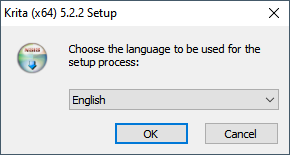
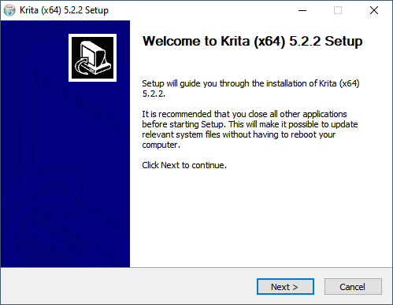
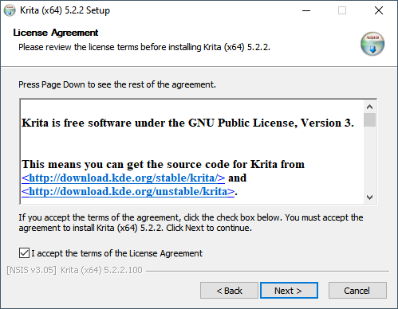
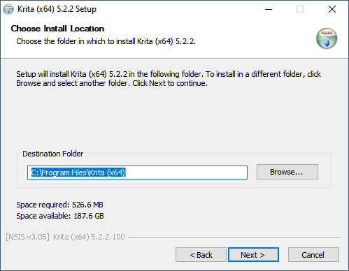
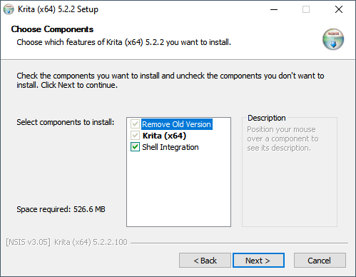
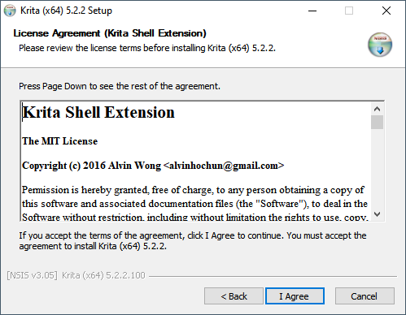
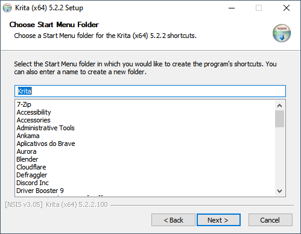
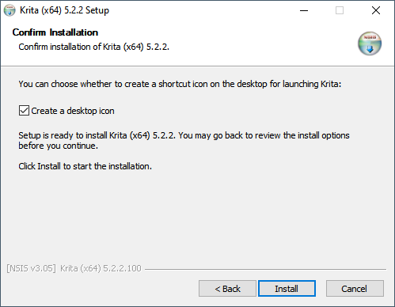
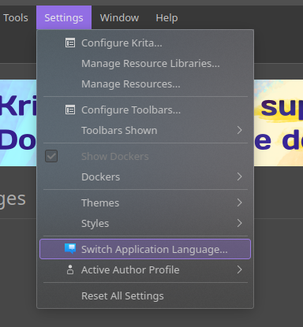
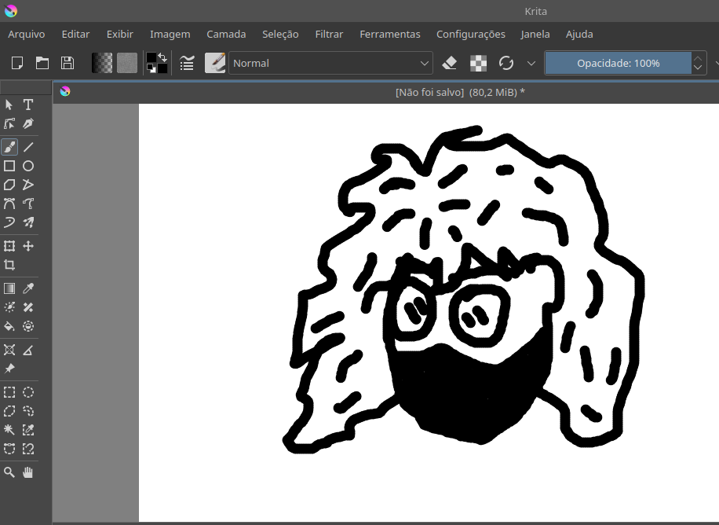

Leia todo o conteúdo da página e após isso clique no menu de navegação para ir ao questionário, Boa sorte!
Krita
O Krita é um software profissional de ilustração, de código aberto e multiplataforma. Nesta página, veremos: como instalar o Krita, como fazer o uso básico do programa e uma comparação com outro software de ilustração.
Como baixar e instalar
Baixando o instalador
Para instalar o Krita no seu computador, primeiro é necessário baixar o instalador do site oficial.
Acesse o site oficial clicando aqui.
Em seguida, clique em "Download". É o botão azul na parte direita da tela. Não tem erro.
Você será redirecionado para uma página com mais um botão azul, neste estará escrito "Windows Installer". Basta clicar no botão e o instalador começará a ser baixado.
Localizando o instalador
Tendo terminado de baixar o instalador, basta executá-lo para dar início ao processo de instalação. Ele pode ser encontrado na pasta "Downloads" do Windows, ou clicando nos três tracinhos (ou pontinhos) no canto superior direito do seu navegador e clicando em seguida em "Downloads".
Nesta tela, seu navegador lhe mostrará os arquivos baixados recentemente e, se o download tiver corrido bem, o instalador do Krita estará listado aqui.
Localizado o instalador, dê dois cliques nele, caso esteja vendo pelo Windows Explorer, ou um clique, caso o tenha encontrado pela página de Downloads do navegador.
Instalação
Executado o instalador, aparecerá a seguinte janela:
Clique em "Ok" para prosseguir. Logo outra janela surgirá na tela. O instalador recomenda que você feche quaisquer outros programas que estejam abertos antes de prosseguir com a instalação. Clique em "Next".
Na próxima janela o instalador nos apresenta o Acordo de Licença do Krita. Sinta-se à vontade para lê-lo antes de continuar. Quando estiver pronto, marque a caixinha "I accept the terms of the License Agreement" e clique em "Next" para prosseguir com a instalação.
O instalador agora nos pergunta qual será o local de instalação do programa. O diretório de instalação padrão é adequado, mas se desejar mudá-lo basta clicar em "Browse...", selecionar a pasta em que deseja que o Krita seja instalado e clicar em "Select folder". Mas, novamente: o diretório padrão já é suficiente. Para prosseguir, clique em "Next".
Na janela seguinte é possível escolher os componentes que você quer que sejam instalados com o Krita. Porém, num primeiro momento, não há necessidade de mudar as opções padrão. Prossiga com a instalação ao clicar em "Next". Não se preocupe, os nexts já estão acabando.
Logo depois, o instalador pede que concordemos com o Acordo de Licença do "Krita Shell Extension", um dos componentes que são instalados por padrão pelo Krita. Clique em "I agree", após ler o acordo.
Como último passo antes de instalar o Krita, o instalador pergunta qual será o nome da pasta do programa no Menu Iniciar. Não se incomode em alterar nada e, novamente, clique em "Next".
Por fim, marque a opção "Create a desktop icon", se já não estiver marcada, e clique em "Install". Assim, a instalação terá início e basta aguardar alguns minutos até que seja finalizada.
Quando for finalizada, clique em "Next" e depois em "Finish" para fechar o instalador. Prontinho, o Krita está instalado no seu computador! Para abri-lo basta dar dois cliques em seu ícone na área de trabalho.
Usando o Krita
Meu Krita está em inglês
Se ao abrir o programa pela primeira vez ele estiver em inglês, basta clicar em "Settings", depois "Switch Application Language" e trocar a opção do dropdown de "American English" para "português (Brasil)". Depois de reinicia-lo, o Krita já deve estar em português.
Criando um novo arquivo
Para criar um novo arquivo, na tela inicial do Krita clique em "Nova imagem". Você também pode clicar em "Arquivo" na barra superior, e depois em "Novo".
Surgirá uma pequena janela com várias opções de personalização. Modifique o tamanho e as cores da imagem que está prestes a ser criada como quiser. Em seguida clique em "Criar".
Movimentando-se no Krita
Para dar zoom na imagem, basta rolar o scroll do mouse. Também pode-se usar a "Ferramenta Zoom" para fazer o mesmo. A diferença é que, para dar zoom nesta ferramenta, basta clicar com o botão esquerdo. Você pode diminuir o zoom segurando a tecla CTRL enquanto clica com o botão esquerdo.
Para mover-se pela tela de pintura, segure o botão do meio e arraste o mouse pela tela. Você pode fazer a mesma coisa clicando na "Ferramenta de posicionamento", que tem o símbolo de mãozinha, e arrastar o mouse na tela clicando com o botão esquerdo.
Desenhando
Para desenhar no Krita é simples: basta selecionar a "Ferramenta de traços livres de pincel", seja clicando em seu ícone de pincel ou simplesmente apertando a tecla "B", clicar com o botão esquerdo na imagem, arrastar seu mouse e deixar a criatividade fluir!
Comparação entre ferramentas
Esta página não estaria completa sem uma pequena comparação entre o Krita e outro programa de mesmo nicho. Por isso, vamos comparar o Krita com um dos softwares de ilustração mais usados do mercado: o Clip Studio Paint!
Vantagens do Krita
- Gratuito e de código aberto;
- Multiplataforma (Windows, Linux, macOS, Android, ChromeOS);
- Interface intuitiva;
- Comunidade acolhedora;
- Grande número de tutoriais e guias gratuitos produzidos pela comunidade;
- Coleção imensa de pincéis;
- Pode ser usado para produzir animações;
- Atualizações frequentes.
Desvantagens do Krita
- O programa tende a ficar lento e crashando em grandes projetos de animação;
- Não recomendado para grandes projetos no geral;
- Pode não ser tão intuitivo em situações específicas.
Vantagens do Clip Studio Paint
- Versátil;
- Multiplataforma (Windows, MacOS, Android, IOS);
- Pincéis de incrível qualidade;
- Grande biblioteca de recursos disponíveis para uso no programa;
- Licença de pagamento único;
- Pode ser usado para fazer animações;
- Muito bom em histórias em quadrinhos.
Desvantagens do Clip Studio Paint
- A licença é bem cara;
- Grande curva de aprendizado;
- A versão PRO tem algumas limitações;
- Acesso a grandes atualizações é por assinatura.